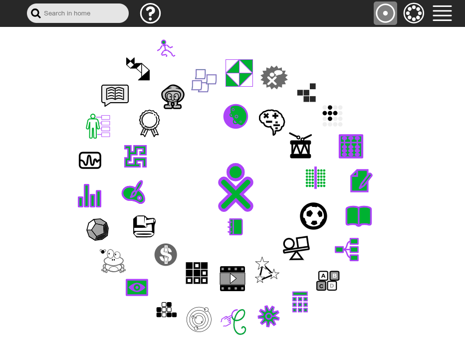
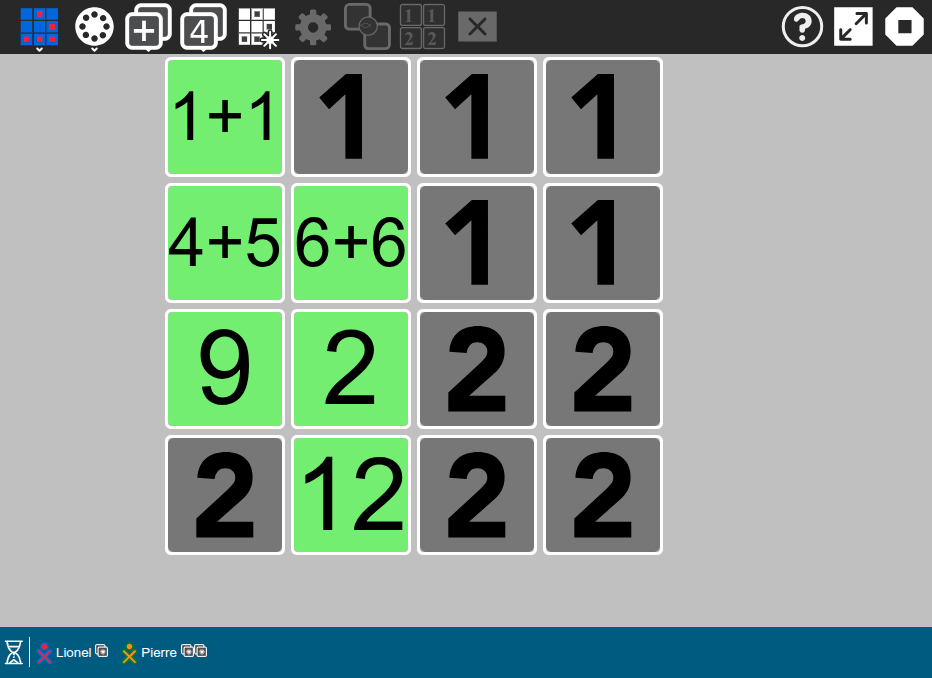
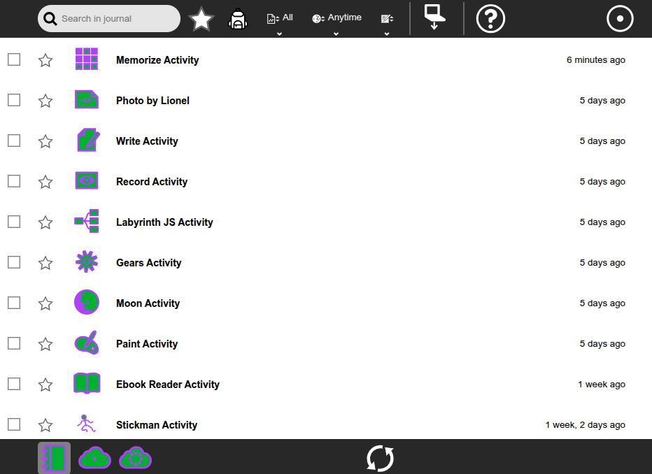

Sugarizer’s interface, inherited from Sugar, may seem surprising at first glance.
It deliberately breaks away from traditional computing environment conventions. Where classic systems favor productivity and functional complexity, Sugarizer takes the opposite approach: simplicity, clarity, and learning. This apparent simplicity is not a limitation, but a strong intention. Every element of the interface is designed to guide children through a gradual, intuitive, and creative discovery.
Sugarizer is not just a technical platform: it is an educational tool designed for learning by doing, exploring without fear, and collaborating naturally with others.

Sugar was designed to make computing accessible to children worldwide, many of whom may have never used a computer before or may not know how to read. Its design does not seek to mimic traditional computers: it emphasizes learning, discovery, and collaboration rather than traditional productivity.
Some of the key principles:
Performance – Sugarizer must run on low-powered machines (limited memory, storage, processor); activities need to be efficient, lightweight, and mindful of hardware constraints.
Simplicity – The interface should remain clear, without unnecessary controls; this enhances learning and discovery.
Usability – The behavior and layout of elements must meet the expectations of users (children aged 6 to 12, beginners in computing); the interface should be intuitive. Users should be able to understand what they can do without reading documentation.
Adaptability – Sugarizer can be used in different modes: limited color/contrast, with or without network, on a computer or a tablet… The interface and activities must handle these variations.
Recoverability – Encourage exploration and trial-and-error without fear of losing everything; activities should allow undoing, saving, and resuming.
Security – Ensure protection of data, device, and the child’s privacy, while avoiding pop-ups or mechanisms that are too complex for the user.
Unlike classic systems based on desktops and windows, Sugar is built around the concept of activity. Each task (writing, drawing, programming, playing) is performed in full screen to avoid distractions. Collaboration is at the heart of the experience: children can share an activity, see other participants, and work together in real time.

Icons are simple, stylized, and recognizable in both black and white and color. The color palette is limited to remain readable on low-contrast screens and for children with visual impairments. Most of the screen is dedicated to the activity area (Canvas); toolbars and palettes appear only when needed, so as not to hinder creativity.
The Sugarizer environment is built around three essential components:
The Home Page: This is the starting point for exploration. It displays the icons of activities, ready to be launched or already running. Children can pin their most-used activities here. Icon colors adapt to the child’s preferences. The approach is playful: the screen is not just a list, but a personal space centered on the child.
The Journal: Instead of complex file systems, Sugarizer offers a journal that automatically records everything the user does: documents, images, activities, exchanges, etc. Each entry includes the date, activity type, and a preview, making it easy to resume work where it was left off. The Journal thus becomes a living memory of the child’s learning and discoveries.
The Network View: This area illustrates the collaborative dimension of the project. Children can see other nearby users and shared activities in real time. They can join a shared activity, exchange, or collaborate simply by clicking on the icons of other connected children. This visual representation of the network makes sharing concrete and intuitive.

Sugarizer builds on the spirit of Sugar: an educational, open, and human environment. Its minimalist design hides a wealth of intentions: encouraging curiosity, autonomy, and cooperation rather than mere content consumption. Every component—from the home page to the Journal, to the Network View—embodies the same philosophy: putting technology at the service of learning, not the other way around.
By offering an interface that values discovery over performance, Sugarizer redefines the relationship between children and computers. It is no longer just a machine to use, but a learning companion—an environment where you can experiment, share, and grow together.